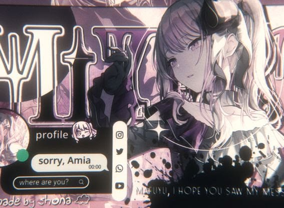
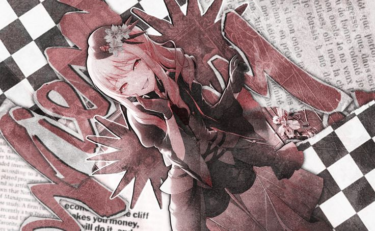

Open Window
A collection of things that caught my eye.
Featured Image
A Peaceful Afternoon
Some places don't need a reason to be remembered. They simply make the world feel a little quieter, and a little more beautiful.
Gallery
